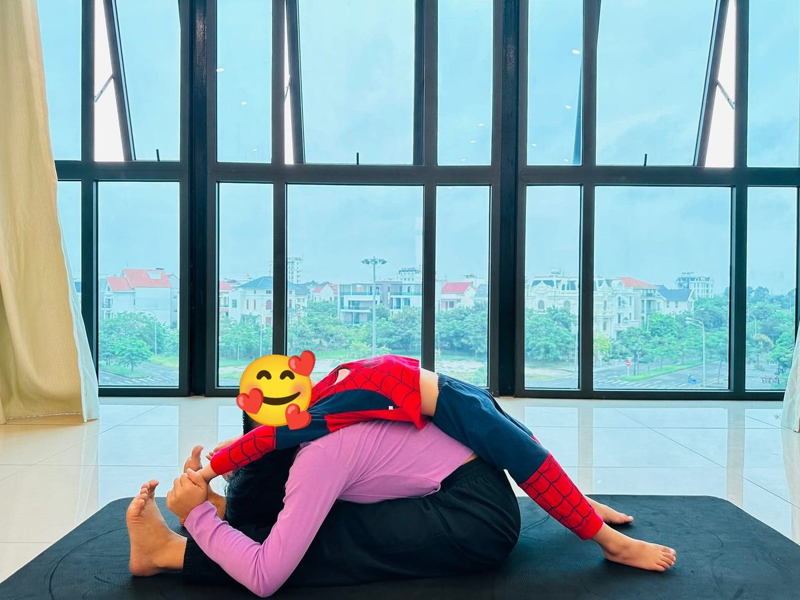
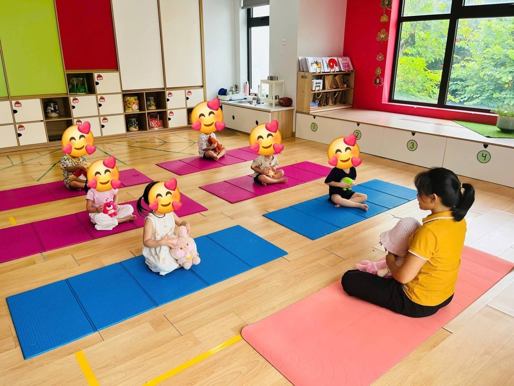
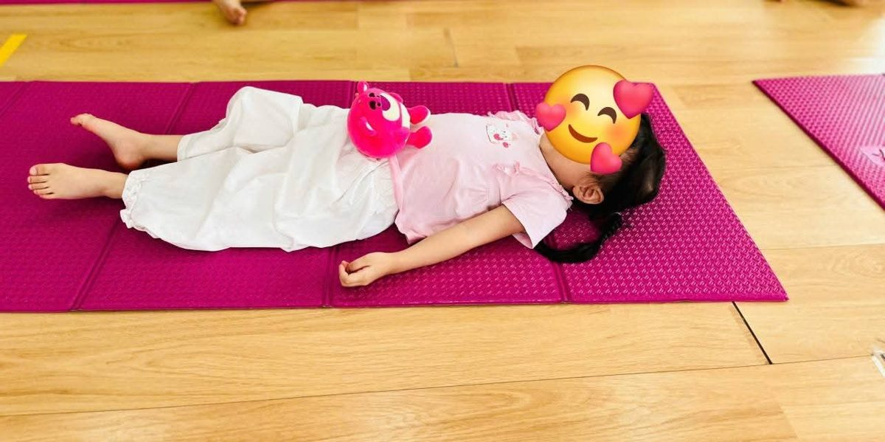
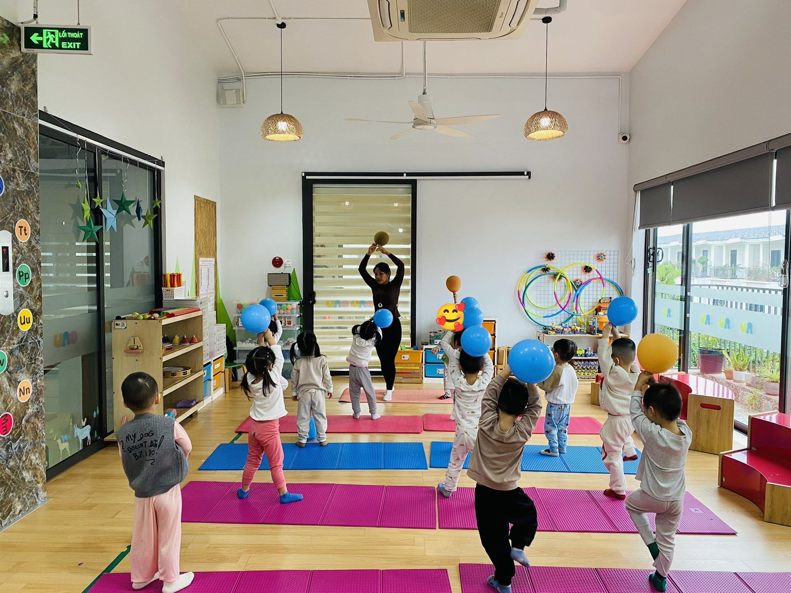

Cảm xúc
Ứng dụng yoga cân bằng phục hồi cho bé lo âu khi xa mẹ, sợ đi học

Bảy giờ sáng. Cổng trường mầm non. Một bàn tay nhỏ bám chặt cổ áo mẹ.
Mẹ thì sắp muộn làm. Cô giáo giơ tay đón. Con khóc to hơn. Có hôm mẹ đi rồi, ra tới xe vẫn nghe tiếng con gọi. Cả ngày hôm ấy, người lo âu đâu chỉ có con.
Sophia gặp cảnh này rất nhiều, ở cổng trường, ở cửa lớp yoga, ở buổi đầu tiên một bé đến tập. Cô muốn viết bài này để bố mẹ bớt tự trách mình, và có thêm vài cách nhỏ, dịu dàng, để con đi qua giai đoạn ấy.
Lo âu khi xa mẹ là một phần của lớn lên
Từ khoảng 8 tháng tuổi, em bé bắt đầu hiểu rằng mẹ là một người riêng, có thể đi khỏi. Nỗi sợ xa người thân xuất hiện từ đây, thường rõ nhất trong khoảng 1 đến 3 tuổi, rồi dịu dần khi con lớn. Nhà tâm lý John Bowlby gọi sợi dây giữa con và người chăm sóc là gắn bó (Attachment and Loss, 1969). Con khóc khi mẹ đi, theo một cách nào đó, là dấu hiệu sợi dây ấy đang có thật.
Những nghiên cứu của Mary Ainsworth sau đó cho thấy: những em bé gắn bó an toàn cũng buồn khi mẹ đi, nhưng các con dịu lại khá nhanh, và vui khi mẹ quay về (Ainsworth và cộng sự, 1978). Mục tiêu của mình không phải là một đứa trẻ không bao giờ khóc khi chia tay. Mà là một đứa trẻ tin rằng mẹ sẽ quay lại.
Vì sao có bé lo nhiều hơn?
Mỗi bé một khí chất. Có bé bước vào lớp như vào nhà mình. Có bé cần đứng ở cửa nhìn mười phút. Ngoài khí chất, cô thấy những điều sau hay làm nỗi lo to lên:
- Thiếu ngủ, đói, mệt. Một cơ thể mệt thì cảm xúc nào cũng to hơn.
- Thay đổi lớn: chuyển nhà, có em bé, đổi trường, bố mẹ đi công tác.
- Chia tay vội vàng hoặc lén lút. Mẹ bỏ đi lúc con không để ý, lần sau con bám chặt hơn vì không biết lúc nào mẹ biến mất.
- Nỗi lo của chính người lớn. Con đọc gương mặt mẹ. Mẹ lo, con càng lo.
- Buổi tối quá nhiều màn hình, ít thời gian được ôm, được chơi cùng bố mẹ.
Nhìn con trên cả năm thể
Trong yoga, con người không chỉ có thân thể. Có hơi thở, có cảm xúc, có suy nghĩ, có phần tinh thần sâu bên trong. Sophia gọi đó là năm thể. Nỗi lo khi xa mẹ chạm vào cả năm:
- Thân: bụng thắt lại, tay chân lạnh, có bé đau bụng thật vào sáng thứ Hai.
- Hơi thở: nông, nhanh, nấc lên khi khóc.
- Tâm: sợ, buồn, giận.
- Trí: những câu hỏi con chưa nói ra được: mẹ có về không, ai đón con, ở đây có ai thương con không.
- Tinh thần: cảm giác mình an toàn trong thế giới.
Nên cách giúp con cũng không chỉ là một tư thế. Là hơi thở. Là nghi thức chia tay. Là giấc ngủ, bữa sáng, buổi tối bên nhau. Tư thế yoga chỉ là một phần trong đó.
Hơi thở là chỗ dựa con mang theo được
Mẹ không thể ở cạnh con cả ngày. Nhưng hơi thở thì luôn ở đó. Khi con được tập thở chậm lúc đang vui, đến lúc lo, con có sẵn một chỗ để quay về.
Ở lớp, cô dạy các con “thở bóng bay”: hai tay ôm quả bóng tưởng tượng trước bụng, hít vào bóng to ra, thở ra bóng nhỏ lại. Thở ra chậm hơn hít vào. Ba lần thôi. Bố mẹ thử cùng con ở đây:
🎈 Thở bóng bay cùng con
Nhiều tổng quan nghiên cứu đã ghi nhận yoga, gồm tư thế, thở và thư giãn, có thể giúp giảm lo âu ở trẻ em và thiếu niên, dù các nghiên cứu còn nhỏ và cần thêm (Weaver và Darragh, 2015). Cô hiểu điều đó theo nghĩa giản dị: một cơ thể được thở chậm, được vận động, được thả lỏng, thì có thêm chỗ để chứa nỗi lo.
Nghi thức chia tay: ngắn, ấm, giống nhau mỗi ngày
Trẻ nhỏ yên lòng nhất khi biết trước điều gì sẽ xảy ra. Một nghi thức chia tay lặp lại mỗi sáng là một tấm bản đồ nhỏ cho con. Cô hay gợi ý bố mẹ:
- Ôm ba hơi thở. Mẹ ngồi xuống, ôm con, cùng thở ra ba lần thật chậm.
- Một câu giống nhau mỗi ngày: “Mẹ đi làm, con đi học. Sau giờ ngủ trưa, ăn quà chiều, mẹ đến đón.” Gắn giờ đón với một việc con hiểu được, thay vì “5 giờ”.
- Một dấu hiệu bí mật: hôn vào lòng bàn tay con, nắm tay lại “cất nụ hôn”, lúc nhớ mẹ thì áp tay lên má.
- Tạm biệt rồi đi thật. Không lén đi. Không quay lại ba bốn lần. Sự dứt khoát dịu dàng giúp con hơn sự dùng dằng.
- Giữ lời. Đến đón đúng như đã hứa. Mỗi lần giữ lời là một viên gạch của niềm tin.
Một món đồ quen từ nhà, như chiếc khăn nhỏ, con gấu bông, cũng giúp con rất nhiều. Bác sĩ nhi và nhà phân tâm học Donald Winnicott gọi đó là “vật chuyển tiếp”, cầu nối giữa vòng tay mẹ và thế giới bên ngoài (Winnicott, 1953).

Những câu nói nên đổi
Lúc vội, ai cũng dễ buột miệng. Bấm vào từng thẻ để xem cô gợi ý nói thế nào:
Năm tư thế nhẹ giúp con thấy vững
Cô chọn những tư thế đơn giản, an toàn, chạm vào cảm giác được che chở và cảm giác đứng vững. Không cần tập lâu. Năm đến mười phút buổi tối hoặc buổi sáng là đủ.
- Em bé ngủ (tư thế em bé): quỳ, gập người, trán chạm thảm, hai tay xuôi. Mẹ đặt tay ấm lên lưng con. Đây là tư thế “ngôi nhà nhỏ”, cô hay để các con trốn vào khi thấy lo.
- Cái cây: đứng một chân, bàn chân kia đặt ở cổ chân hoặc bắp chân. “Rễ cây cắm sâu xuống đất, gió thổi cây vẫn đứng.” Cảm giác đứng vững trên mặt đất rất giúp những bé hay lo.
- Con mèo và con bò: quỳ bốn chân, cong lưng lên như mèo, võng lưng xuống như bò, theo nhịp thở. Cột sống mềm ra, hơi thở dài ra.
- Con rùa: ngồi, hai chân dang, luồn tay dưới gối, cúi người. “Rùa rụt vào mai cho an toàn, rồi thò đầu ra nhìn thế giới.” Một trò chơi về sự can đảm, từng chút một.
- Ôm cả nhà: con nằm ngửa ôm hai gối vào ngực, lăn nhẹ sang hai bên. Mẹ nằm cạnh làm cùng. Tự ôm mình là một kỹ năng.


Bảy ngày làm quen, từng bước nhỏ
Khi con chuẩn bị đi nhà trẻ, đổi trường, hay bắt đầu một lớp mới, bố mẹ có thể đi cùng con một tuần nhỏ như dưới đây. Đánh dấu điều đã làm. Trang sẽ nhớ trên máy của bạn.
🗓 Bảy ngày làm quen
Đổi lối sống: điều quan trọng hơn mọi tư thế
Yoga cân bằng phục hồi với trẻ không nằm trên tấm thảm. Nằm trong nhịp sống của cả nhà.
- Ngủ đủ. Trẻ mẫu giáo cần khoảng 10 đến 13 tiếng mỗi ngày, kể cả giấc trưa (theo khuyến nghị của Viện Hàn lâm Y học Giấc ngủ Hoa Kỳ). Xem thêm bài bé ngủ ngon.
- Ăn sáng đủ, không vội. Một chiếc bụng no làm con bớt cáu bớt lo.
- Thời gian “đầy bình” buổi tối: mười lăm phút chỉ có bố mẹ và con, không điện thoại. Con được đầy thì sáng hôm sau dễ xa hơn.
- Chơi ngoài trời, đi chân đất, tắm nắng sớm. Cơ thể được vận động, được chạm đất, thì tâm dễ lắng.
- Bớt màn hình trước giờ ngủ. Xem thêm bài bé mê màn hình.
- Bố mẹ cũng thở. Trước khi ra khỏi nhà, mẹ thở ra ba hơi dài. Con mượn sự bình tĩnh của mẹ.
Trong tám bậc của yoga, bậc đầu tiên là ahimsa, không làm tổn thương. Với một em bé đang lo, ahimsa là không dọa, không chê, không bỏ đi lén. Bậc thứ hai, satya, chân thật: nói đúng giờ đón, và đến đúng như đã nói.
Khi nào nên hỏi ý kiến bác sĩ
Phần lớn nỗi lo khi xa mẹ sẽ dịu dần sau vài tuần đến vài tháng. Bố mẹ nên đưa con đi khám bác sĩ nhi khoa, hoặc gặp chuyên gia tâm lý trẻ em, nếu:
- Nỗi lo kéo dài nhiều tuần mà không dịu đi, và quá mức so với tuổi của con, nhất là ở bé đã 5, 6 tuổi trở lên.
- Con thường xuyên đau bụng, đau đầu, buồn nôn vào buổi sáng đi học, mà khám không thấy bệnh.
- Con không chịu đi học nhiều ngày liền, hoặc sợ ngủ một mình, gặp ác mộng về chuyện mất bố mẹ.
- Con thoái lui rõ: đái dầm lại, nói ngọng lại, bỏ ăn, mất ngủ.
- Nỗi lo xuất hiện đột ngột sau một sự việc lớn, hoặc con có biểu hiện sợ hãi một người, một nơi cụ thể.
Yoga đi cùng, không thay thế sự chăm sóc của bác sĩ và chuyên gia. Khi cần, cả hai cùng nắm tay con là tốt nhất.
Điều Sophia muốn gửi bố mẹ
Con khóc ở cổng trường không có nghĩa bố mẹ làm sai. Cũng không có nghĩa con yếu đuối. Con đang học một bài học khó nhất của tuổi thơ: thương một người, và tin rằng người ấy vẫn ở đó khi không nhìn thấy.
Mình không cần làm cho con hết sợ. Mình chỉ cần ở bên con, thở cùng con, cho đến khi con thấy mình đủ vững để bước vào.
Hít vào, mẹ ôm con. Thở ra, mẹ tin con.
🌿 Muốn con có một lớp yoga ấm áp như vậy?
Bố mẹ muốn con tập cùng cô Sophia thì nhắn cô hỏi lịch lớp nhé. Thầy cô muốn học cách dẫn những bé hay lo, hay khóc ở buổi đầu, Sophia hướng dẫn kỹ trong khóa Đào tạo Huấn luyện viên Yoga trẻ em.
Đọc thêm: Ứng dụng yoga cân bằng phục hồi cho bé nhút nhát, thiếu tự tin, Ứng dụng yoga cân bằng phục hồi cho bé hay cáu giận, khóc nhè và Yoga đôi.
📚 Tài liệu tham khảo
- Bowlby J. Attachment and Loss, Vol. 1: Attachment. Basic Books, 1969.
- Ainsworth MDS, Blehar MC, Waters E, Wall S. Patterns of Attachment: A Psychological Study of the Strange Situation. Lawrence Erlbaum, 1978.
- Winnicott DW. Transitional objects and transitional phenomena. International Journal of Psycho-Analysis, 1953;34:89–97.
- Weaver LL, Darragh AR. Systematic review of yoga interventions for anxiety reduction among children and adolescents. American Journal of Occupational Therapy, 2015;69(6):6906180070.
- Paruthi S, Brooks LJ, D’Ambrosio C, et al. Recommended amount of sleep for pediatric populations: a consensus statement of the American Academy of Sleep Medicine. Journal of Clinical Sleep Medicine, 2016;12(6):785–786.
- Siegel DJ, Bryson TP. The Whole-Brain Child. Delacorte Press, 2011.
- Cohen LJ. Playful Parenting. Ballantine Books, 2001.
- American Psychiatric Association. DSM-5: Separation Anxiety Disorder, 2013.